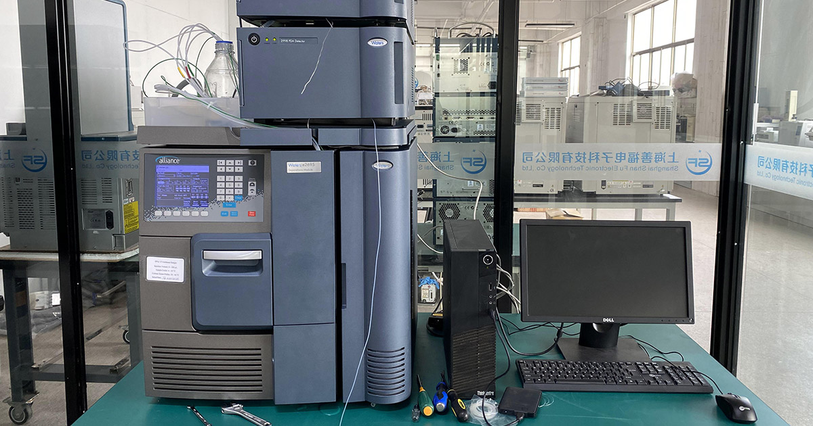
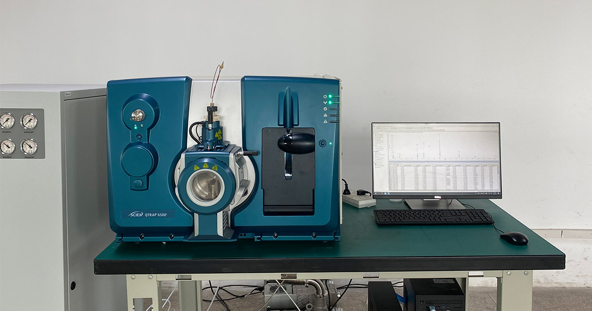

专注二手分析仪器 12 年
液相色谱 · 气相色谱 · 质谱联用一站式服务商
上海善福电子科技有限公司主营国内外二手分析仪器，提供销售、租赁、维修、回收及实验室搬迁等全链路服务，服务第三方检测与高校科研，品牌涵盖 Waters、Thermo Fisher、Shimadzu、SCIEX 等。
企业信息 · 核心速览
- 公司全称
- 上海善福电子科技有限公司（Shanghai Shanfu Electronic Technology Co., Ltd.）
- 成立年份
- 公司 2012 年成立，2014 年起专注二手分析仪器行业，至今专注 12 年。
- 主营品牌
- Waters（沃特世）、Thermo Fisher（赛默飞）、Shimadzu（岛津）、AB SCIEX、PerkinElmer（珀金埃尔默）等进口品牌。
- 主营仪器
- 二手液相色谱仪 HPLC、气相色谱仪 GC、液质联用 LCMS、气质联用 GCMS、ICP-MS、光谱仪等分析仪器。
- 核心服务
- 销售 · 租赁 · 维修保养 · 回收 · 实验室搬迁——一站式全链路。
- 营业时间
- 周一至周六 09:00-18:00
- 库存与客户
- 在库二手仪器 1000+，累计服务客户 500+ 家
- 服务区域
- 上海、江苏、浙江、安徽，全国可上门；工程师 24-48 小时内响应。
- 联系方式
- 电话 +86-13641683222 · 邮箱 shanfudianzi-services@outlook.com · 地址 临港嘉定科技城（上海市嘉定区）。
核心业务 · 一站式仪器服务
从采购到退役，上海善福为实验室提供全生命周期的二手分析仪器解决方案。


产品中心 · 二手进口分析仪器
涵盖液相色谱、气相色谱、液质联用、气质联用、ICP-MS、光谱仪等主流品类。

二手液质联用仪
液质联用 LCMS三重四极杆液质，适用于定量与残留分析。
查看详情
沃特世 Waters Alliance e2695 液相色谱系统（配 2998 PDA 检测器）
液相色谱 HPLCAlliance e2695 液相色谱系统 + 2998 PDA 检测器，二手现货。
查看详情
Waters ACQUITY UPLC 超高效液相色谱仪
液相色谱 HPLC超高效分离，耐压高、灵敏度好。
查看详情
AB SCIEX QTRAP 6500+ 三重四极杆-线性离子阱液质联用仪（二手现货）
液质联用 LCMS2026 年 8 月到货，SCIEX QTRAP 6500+ 液质联用仪，二手现货，MRM 高灵敏定量与离子阱定性兼顾。
查看详情
二手液相色谱仪
液相色谱 HPLC二元/四元泵、自动进样、柱温箱成套配置，状态良好。
查看详情
AB SCIEX QTRAP 6500+ 液质联用仪
液质联用 LCMS三重四极杆-线性离子阱复合质谱升级机型，更高灵敏与更快扫描。
查看详情主营品牌 · 全球一线分析仪器
上海善福长期经营以下品牌的二手进口分析仪器，货源稳定、成色优良。

服务领域 · 覆盖科研与产业全场景
12 年来，上海善福的二手分析仪器已广泛应用于第三方检测、高校科研、制药、食品、环境等多个领域，帮助客户以更低成本建立与维持检测能力。
- 第三方检测机构：环境、食品、化妆品、材料检测实验室
- 高校与科研院所：教学、课题、论文所需的色谱与质谱平台
- 制药与生物：原料药、制剂、杂质与残留分析
- 食品与农产品：农残、添加剂、营养成分检测
- 环境与水质：重金属、VOCs、污染物监测
新闻资讯 · 公司动态与行业洞察
了解上海善福的最新动态、行业趋势与二手仪器选购常识。

上海善福十二周年：累计服务客户突破 500 家
上海善福电子科技迎来十二周年里程碑：深耕二手分析仪器领域，累计服务第三方检测与高校科研客户突破 500 家，业务覆盖销售、租赁、维修、回收与实验室搬迁。

降本增效驱动，二手分析仪器采购成新趋势
在科研与检测预算趋紧、强调资产效率的背景下，越来越多实验室转向成色优良、经过质检的二手进口分析仪器。相比新机，二手仪器价格优势明显，主流品牌机型技术成熟、配件充足，成为降本增效的新采购趋势。
上海善福开通微信即时咨询
上海善福开通微信即时咨询：客户可通过微信快速询价，获取二手分析仪器的型号、成色、价格与质保信息，沟通更便捷，售前售后一体响应，全程跟进订单。
上海善福仓库扩容升级
上海善福仓库扩容升级：出库与质检流程进一步优化，入库二手仪器经外观、电气、性能三级检测后交付，保障到手即可稳定使用，交付更及时可靠，服务更有保障。
上海善福推出以旧换新活动
上海善福推出以旧换新活动：旧机折价换购新到库二手分析仪器，帮助客户以更低成本完成设备升级，盘活闲置资产，流程简便、估价透明，覆盖主流品牌机型。
上海善福扩充岛津机型库存
上海善福扩充岛津机型库存：新增多台岛津 LC/GCMS 现货，涵盖液相色谱与气相色谱质谱联用系统，状态良好、即购即用，欢迎咨询，支持销售与租赁。